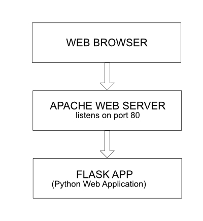

The purpose of this workshop is to build our first website using Flask !It will be the simplest site possible - so in the future can be used as a sort of template project...
What is Flask?
Flask is a lightweight and flexible Python web framework. As a micro framework, it provides the minimum essential tools to build web applications. Flask is known for its simplicity, making it easy to get started with web development.
It does not provide built-in functionality for tasks like database handling or form validation. Instead, Flask allows developers to choose the tools and libraries they want to use, resulting in a highly customizable development experience.
To make use of Flask in a production environment, it needs a web server to handle incoming HTTP requests and route them to the appropriate Flask application for processing. This is where Apache comes in. Apache acts as the intermediary between the client (e.g., web browser) and the Flask application.
When deploying Flask with Apache, a module called mod_wsgi is used. This module allows Apache to serve Python web applications using the Web Server Gateway Interface (WSGI). The WSGI interface is a standard for Python web applications to communicate with web servers. (No need to go into great detail here..).
Let’s illustrate the relationship between Flask and Apache using a diagram:

- The Web Browser sends an HTTP request to Apache over port 80.
- Apache, acting as the web server, listens for incoming HTTP requests on port 80.
- When Apache receives an HTTP request, it
passes the request to the appropriate Flask appbased on the URL routing configured in Apache using mod_wsgi. - The Flask app processes the request and generates an HTTP response.
- The HTTP response travels back through Apache and is finally sent back to the Web Browser.
Lets go!
- Ok - we will start from the very beginning ... so of course first you will need to set up a new project and a new environment:
- So lets start a new project in VSCode
- Then lets create a new virtual environment with conda:
conda create --name flaskEnv python=3.13 - Then we activate out virtual environment:
conda activate flaskEnv - And now we can use the package manager called
pip: the standard package installer and dependency manager to install theflask modulepackage. In your terminal type:pip install flask
- Next - we will open a new python file (i.e.
main.py) and import the flask class from the Flask package.from flask import FlaskNotice the capitalization... (
Flask => class andflask => package) - Now we will create the variable
appto hold an instance of theimported Flask class:app = Flask(__name__)Note: the
__name__parameter being passed into the flask instance:This variable passed to the Flask class is a Python predefined variable, which is set to the name of the module in which it is used. Flask uses the location of the module passed here as a starting point when it needs to load associated resources such as
template files- to be discussed later on! For all practical purposes, passing__name__is almost always going to configure Flask in the correct way.The application then imports the routes module, which doesn't exist yet.
- So - once we have created the application we can add
pagesto it. So, lets make a function to setup the first "page" calledindex:def index(): return 'Hello CART 351!
'So - this function defines a page/view:
indexand its going to return the string "Hello CART 351!". Later on, well look at rendering an entire template of HTML code - but for now we will just return a single string (with HTML within). -
But -
when should this html string be rendered in the browser?- And to answer this question we need to define someroutes.
A route is essentially a pathway: the user will enter in apath (URL)and our web application needs to take that path and map it to a particular function. So in this case, we will create a route for the default path:"/".We will use a
decoratorfunction provided to use by the flask librarywhich will essentially link that page to the specified route:@app.route("/") - And - then to start the app you need to call the
run()-- to start the dev server:app.run() -
If you run the script ... and open your browser to your local host at the correct port - you should have the text Hello CART 351- being displayed in your browser! Yay your first flask app is running!
Basic Routes
Just before we set the default route, if we now wanted to create multiple routes for different pages/views, all we would need to do is re-use our decorator function and pass a different string (path) to it and that in turn will link to the associated function otherwise known as a view.
Let's say I want another view at the path /about:
- First: I will make a new function (view) for this path:
def about(): return '<h1 style = "color:purple"> About Cart 351!</h1>' - And then I will set the route:
@app.route("/about") - Test ... Note: your
viewfunction need NOT have the same name as theroute string... BUT it is good practice to have associated names - AS practice:
create another view function and route... and test
Dynamic Routes
We are on a roll... we will now discuss dynamic routing. Often we want URL routes (paths) to be dynamic based on a particular situation.
Example: Say you have a web application with many users and each of those users should have their own separate view (profile page).
Essentially, we want a unique url for every user :) - i.e. /user/<unique_user_url> .
We do NOT want to have a unique view function for each user... why? Because the view functions are created independently of the data (i.e. number of users etc) - we want ONE view function for a user's profile and so we can use dynamic routes.
Dynamic routes have two key aspects:
- A
variable: within ANGLE brackets in the route string inside the decorator - A
parameter(same name as variable) passed in to the associated function
Let's show this through code:
@app.route("/user/<name>")
def user_profile(name):
# we will use templates sooN!
return f"<h2> This is <span style = 'color:orange'>{name}'s</span> profile page"
- You have the variable
<name>in the decorator parameter - We then pass that SAME
namevariable to the user_profile() - which can then be used within the body of the function ...
Please note - that this is a simple example ... i.e. you could take the variable - use it for a database query - retrieve results based on that user and then output a lot more info ... Anyway - try out the above example :)
Debug Mode
This is a super important section - because you will often while developing, make errors and it is really important to have help in catching the errors ...
So we will activate the debug mode in our application. Lets start with our previous app - and effectively set up an error:
say you want to output the the hundredth letter of the variable associated with another dynamic route:
@app.route("/another/<dynamicVar>")
def another_route(dynamicVar):
# we will use templates sooN!
return f"<h2> the 100th letter of {dynamicVar} is {dynamicVar[99]}</h2>"
If you run this... and your dynamic variable DOES NOT have 100 letters - well you get an Internal Server Error :( This does not kill your server , but it is not helpful in terms of debugging in the browser.
So within the app.run() add the parameter debug =True. Then try the page again .... oh wow :) Now you get alot more information about what is going wrong with the code.
What is super cool is ... that if you hover over the traceback messages - you see a an icon for an interactive console. ... if you click on it - you will be first asked for a PIN..
How to find the pin:
Go into your terminal - and scroll up (there was the whole traceback there) - at the top is the debugger pin i.e.: * Debugger PIN: 831-287-748
Use this...
Now - we have a debugger console available in our browser at that traceback point. So if you type i.e dynamicVar - it will return the string.
And then if you try dynamicVar[99] .. it will give you the error!
Finally - remove degug=True when you are deploying ...:)
Routing Exercise
Task:You will creating a simple web page that converts cat names into cat-latin:) - made up..Rules:- If a cat name does NOT end in a 'y' add a 'y' onto the name. (i.e. Bernard -> Bernardy)
- If a cat name does end in a 'y', replace the y with 'iful' (i.e.Spunky -> spunkiful)
Huh?:Make a new dynamic route - taking in a cat name and output the converted string.
Templates!
So far we have only returned back HTML manually through a python string.
But in the *real world* it would make much more sense to connect a view function with an associated HTML Template.
Flask will automatically look for HTML templates in the templates directory.
We will then render templates simply by importing the render_template function from flask and returning an .html from our view function.
Ok - you can start with the existing project/ environment... we will just start with a new python file called server_week_4.py.
- Next: At the root of the project create a new folder called
templates - Then inside the templates folder - lets create a file called
pineapples.html - Next, in the html page generate the standard html markup and add an h1 tag saying:
pineapples in flask - Ok - so now we want to link this template to our flask application - go to your
server_week_4.py"and type:from flask import Flask,render_template -
then create your flask app:
app = Flask(__name__) -
then we create the default route - but instead of returning an HTML string - we will render our template!
@app.route('/') def index(): return render_template("pineapple.html") -
Flask will look in the
templatesfolder for the file calledpineapple.html. Finally add therun()and test.app.run(debug=True)
You should quickly see already that this is definitely expandable by creating more view functions and html files...
So html files inside the templates folder are templates -- which means:
- We will soon be able add/pass dynamically driven data to them
But they need to be rendered by flask... they are not accessible just by typing the URL (i.e. pineapple.html) in the browser.
So - the question is what if we want to reference and render static files?
For example: we will add an image to another html page called pineapple_2.html:
- Inside the templates folder create a file called
pineapples_two.html - Add the following markup (NOTE:: you can download your own image if you wish. - or download these here)
<!DOCTYPE html> <html lang="en"> <head> <meta charset="UTF-8"> <meta name="viewport" content="width=device-width, initial-scale=1.0"> <title>pineapples again in flask</title> </head> <body> <h1>pineapples again in flask</h1> <img src = "../static/images/pineapple_2.jpg"> </body> </html> - Add another route in the python file:
@app.route('/another') def another(): return render_template("pineapple_two.html") - And create a new folder called
staticat the root. Then, within that folder, a folder calledimages. Then place your image there. - Note by default your static files have to be saved in a folder called
static - Test ....
Template variables
So: we are now able to render HTML templates YAY. But we have not at all leveraged the power of python...
What we want to be able to do is: to use python code in our app: changing and updating variables and logic, and then send that info to the template.
We can use the Jinja template engine to do this.
Jinjatemplating will let us directly insert variables from python code into the HTML template- The syntax for inserting a variable is:
{{some_variable}} - You can pass in python strings, lists, dictionaries and more into our templates
- We will set parameters in the
render_templatefunction and then use the{{}}syntax to insert into the template
The best way to understand this is to see some examples in action:
- Start with the example from before (we were at
pineapple_two.html). - Go ahead and create another html file called
pineapple_three.htmlwith the following markup:<!DOCTYPE html> <html lang="en"> <head> <meta charset="UTF-8"> <meta name="viewport" content="width=device-width, initial-scale=1.0"> <title>pineapples again in flask and vars</title> </head> <body> <h1>pineapples again in flask number three</h1> <img src = "../static/images/pineapple.jpeg"/> </body> </html> - As well, add another new route in the python file:
@app.route('/three') def three(): return render_template("pineapple_three.html") - Next: we will look at passing a
variable to the template.
So, within the view functionthree()add the following below, BEFORE rendering the template:someNewVar = "Sabine" - Ok - now I want to
passthis variable into my template ... I do that by adding another parameter to therender_template():return render_template("pineapple_three.html",my_variable = someNewVar) - Then: we can inject the variable in our html... add the following to
pineapple_three.html:and test ...<h2>Hello {{my_variable}}</h2> - We can pass a
listas a parameter as well. So, within the view functionthree()add the following code below, BEFORE rendering the template:someList = ["one","two","three"] - Ok - now I want to
passthis variable into my template ... I do that by adding another parameter to therender_template():return render_template("pineapple_three.html", my_variable = someNewVar, my_list = someList) - Then: we can inject the list variable in our html... add the following to
pineapple_three.html:and test ...<h2>Hello {{my_list}}</h2> - Because this variable is a list - I can access the
list values by indexas well:<h2>Hello First {{my_list[0]}}</h2> - I can slice:
<h2>Hello First - second {{my_list[0:2]}}</h2>** Note can do loops etc... in JINJA ... but we will come back to this later...**
- We can pass a
dictionaryas a parameter as well. So, within the view functionthree()add BEFORE rendering the template:someDict = {"color":"yellow", "feature":"spiky","taste":"delicious"} - Ok - now I want to
passthis variable into my template ... I do that by adding another parameter to therender_template():return render_template("pineapple_three.html", my_variable = someNewVar, my_list = someList, my_dict = someDict) - Then: we can inject the list variable in our html... add the following to
pineapple_three.html:and test ...<h2>Hello Dictionary {{my_dict}}</h2> - I can also just access a value in a dictionary ... just like normal python :)
<h2>Dictionary Item {{my_dict['color']}}</h2>
Template Control Flow
Ok --- we now know how to inject variables with Jinja templating using the {{}} syntax ;)
We will next look at how we ALSO have access to control flow syntax in our templates (for loops, if statements...) using the special {% %}syntax.
Let's start with an example... we previously passed in a list to our template ... and we want to instead of outputting the entire list in one html tag -> we want to iterate over each element and output each one in a separate html tag:
<ul>
<!-- JINJA syntax for loop -->
{% for item in my_list %}
<!-- output the item-->
<li style ="color:purple">item:{{item}}</li>
<!-- close the for loop-->
{% endfor %}
</ul>
Nice...
Let's continue with some more control flow examples:
- Start with the example from before (we were at
pineapple_three.html). - Go ahead and create another html file called
pineapple_four.htmlwith the following markup:<!DOCTYPE html> <html lang="en"> <head> <meta charset="UTF-8"> <meta name="viewport" content="width=device-width, initial-scale=1.0"> <title>pineapples again in flask and control flow</title> </head> <body> <h1>pineapples again in flask number four</h1> </body> </html> - As well, add another route in the python file:
@app.route('/four') def four(): return render_template("pineapple_four.html") - Next: lets make a
listvariable and assign it before calling therender_template():a_new_list = [1,2,3,4,5] - And as before pass into the
render_template()function:return render_template("pineapple_four.html",a_num_list = a_new_list) - And in our html template just first output the entire list and test:
<h2>{{a_num_list}}</h2> - Next we will add a
for loopin our html template like before - and test:<ul> <!-- JINJA syntax for loop--> {% for singleEl in a_num_list %} <!-- output the item--> <li style ="color:rgb(216, 122, 216)">{{singleEl}}</li> <!-- close the for loop--> {% endfor %} </ul> - We will continue now with the
if/else. Let's add anotherlistvariable containing some colors and assign it before calling therender_template():b_new_list = ["yellow","orange","blue", "green", "turquoise","fuscia","navy"] - And then add a reference in the
render_template():return render_template("pineapple_four.html", a_num_list = a_new_list, color_list = b_new_list) - Then for the sake of repetition :) :) maker another list using a for loop in the html and test:
<ul> <!-- JINJA syntax for loop--> {% for singleCol in color_list %} <!-- output the item--> <li style ="color:rgb(216, 122, 216)">{{singleCol}}</li> <!-- close the for loop--> {% endfor %} </ul> - Now for the
if/else: add the following logic after the list: output some textif the color yellow is in the list:<!-- JINJA syntax if --> {% if "yellow" in color_list %} <p>Found YELLOW in the list!</p> <!-- close the if--> {% endif %} - We can add in an
elseclause:<!-- JINJA syntax if --> {% if "yellow" in color_list %} <p>Found YELLOW in the list!</p> <!-- JINJA syntax else --> {% else %} <p> YELLOW is not in the list!</p> <!-- close the if--> {% endif %}
OK .. so when would this be useful?
Let's say we want to render different HTML based on whether a user is logged in or not.
- Go ahead and create another html file called
pineapple_five.htmlwith the following markup:<!DOCTYPE html> <html lang="en"> <head> <meta charset="UTF-8"> <meta name="viewport" content="width=device-width, initial-scale=1.0"> <title>pineapples and users :)</title> </head> <body> <h1>pineapples and users</h1> <p style ="color:rgb(216, 122, 216); text-transform: uppercase"> User is not Logged In </p> <img src = "../static/images/Lemon.jpg"/> </body> </html> - As well, add another route in the python file:
@app.route('/five') def five(): return render_template("pineapple_five.html") - Next: lets add a variable and assign it before calling the
render_template():userLoggedIn = True - And as before pass into the
render_template()function:return render_template("pineapple_five.html",user_bool = userLoggedIn) - Replace the body of the html with the following:
we will render different html depending on whether the user is logged in or not: then test:<h1>pineapples and users</h1> {% if user_bool %} <p style ="color:rgb(122, 133, 216); text-transform: uppercase"> User is Logged In</p> <img src = "../static/images/pineapple_2.jpg"/> {% else %} <p style ="color:rgb(216, 122, 216); text-transform: uppercase"> User is not Logged In</p> <img src = "../static/images/Lemon.jpg"/> {% endif %} - Set the
userLoggedInvariable toFalseand test again...
Next week:
- We will continue with templates: template inheritance
- User Input via Webforms
- Reading and writing files
Side topic: python and decorator functions
I need to briefly discuss a more advanced topic in python known as decorators:
- Imagine you just created a function in Python.
- You have the simple function and it does some stuff and then returns something.
- Now imagine that you wanted to add some new capabilities to the function.
- You want it to
keep the original simple stuff, but now you want toadd more capabilities by doing some more things and then returning something else. - So now you have two options:
- You could just add that extra code, that extra functionality to your old function.
- Or you could create a brand new function that contains the old code and then add the new code to that.
- But what if you then want to remove that extra functionality?
- So neither of these solutions is actually pretty good because then you'd either have to use the old function or delete the new code manually.
- So is there a better way?
- Maybe if we could have some sort of quick on/off switch to quickly add this functionality or remove it at our leisure.
- Well ... Python has
decorators that allow you to tack on this extra functionality to an already existing function, and they're going to use theat operator (@) and are then placed on top of the original function. - So now you can actually easily add on extra functionality with a decorator!
- So here we have our original simple function and then we can decorate it with some decorator to add in that extra functionality to the function... Example? ;)